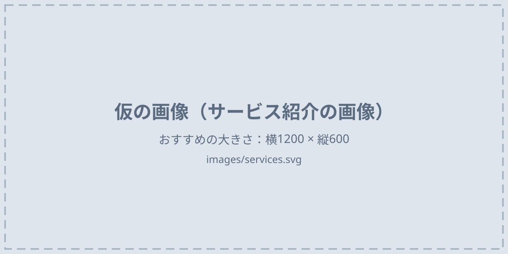

SERVICE
サービス紹介

給与計算代行
毎月の給与計算から、賞与計算、給与明細の発行、振込データの作成まで、給与にかかわる事務作業をまとめてお引き受けします。
勤怠の記録など必要な資料をお送りいただければ、計算結果と明細をお返しします。社内のご担当者は、結果の確認に集中していただけます。
こんなお悩みはありませんか？
- 給与計算をひとりの担当者に任せていて、退職や休みのときが心配
- 毎月の勤怠の集計や手当の計算に、多くの時間がかかっている
- 社会保険料率や税額表の改定に、正しく対応できているか不安
- 社員の給与額を、社内で見られる人を減らしたい
- 事務作業を減らして、本業に使う時間を増やしたい
給与計算を任せるメリット
担当者の作業時間を減らせる
集計や計算の作業を外に任せることで、社内では確認と承認だけを行えばよくなります。
担当者ひとりに頼らずにすむ
担当者の退職や休職があっても、毎月の給与計算が止まる心配を減らせます。
制度の改定を反映して計算
社会保険料率や税額表などの改定を反映して計算するため、社内で改定内容を追いかける手間が省けます。
サービス内容
月次の給与計算
勤怠の記録や変更の情報をもとに、基本給・各種手当・残業代などの支給額と、社会保険料・雇用保険料・所得税・住民税などの控除額を計算し、差引支給額を出します。
月額料金に含む賞与計算
賞与の支給額をもとに、社会保険料・雇用保険料・所得税を計算し、差引支給額を出します。
1回ごとの料金給与明細の発行
計算結果をもとに、給与明細・賞与明細を作成します。印刷して従業員の方へ郵送することもできます。
作成は月額料金に含む 印刷・郵送はオプション振込データの作成
従業員の方の口座へ給与を振り込むための、金融機関向けの振込データを作成します。
オプション勤怠データの集計
タイムカードや勤怠システムの記録から、出勤日数・労働時間・残業時間などを集計します。
オプション住民税の年度更新
市区町村から届く特別徴収税額の通知書をもとに、毎年6月からの住民税の控除額を更新します。
オプション対応範囲
| 月次の給与計算 | 月額料金に含む |
|---|---|
| 給与明細の作成 | 月額料金に含む |
| 賞与計算 | 1回ごとの料金 |
| 給与明細の印刷・郵送 | オプション |
| 振込データの作成 | オプション |
| 勤怠データの集計 | オプション |
| 住民税の年度更新 | オプション |
| 社会保険・労働保険の手続き | 対象外 |
| 年末調整 | 対象外 |
- 社会保険・労働保険の手続きは社会保険労務士の業務、年末調整は税理士の業務のため、当社では承っておりません。
- 料金は料金ページをご覧ください。
コンサルティング
会社の数字の分析から、経営管理の仕組みづくり、事業承継の準備まで、財務と経営のご相談をお受けします。
財務分析・経営診断
決算書や試算表をもとに、収益性・安全性・資金繰りなどを分析します。会社の強みと課題を報告書にまとめて、ご説明します。
経営管理コンサルティング
毎月の業績の確認、予算と実績の比較、資金繰りの管理など、数字にもとづく経営管理を顧問として継続して支援します。
事業承継・企業再編コンサルティング
会社の現状の整理から、後継者への引き継ぎ方針の検討、事業承継計画の策定までを支援します。
スポット相談
経営や財務に関するご相談を、1時間単位でお受けします。顧問契約の前に、まず相談してみたい方にもご利用いただけます。
- 株価の算定、税務申告・税務相談、契約書の作成など、税理士・弁護士の業務は含みません。
ご依頼の流れ
-
お問い合わせ
メールにてお問い合わせください。
-
ヒアリング
従業員数、締め日・支給日、手当や控除の種類、現在の計算方法などをお伺いします。コンサルティングの場合は、ご相談の内容をお伺いします。
-
お見積り
お伺いした内容をもとに、料金のお見積りをお出しします。
-
ご契約・初期設定
ご契約後、従業員の情報や給与規程をお預かりし、計算の設定を行います。
-
毎月の給与計算
毎月の締め日のあとに勤怠の記録などをお送りいただき、計算結果と明細をお返しします。